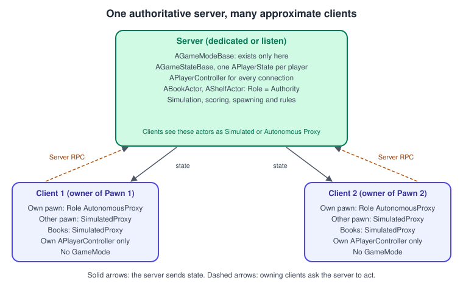
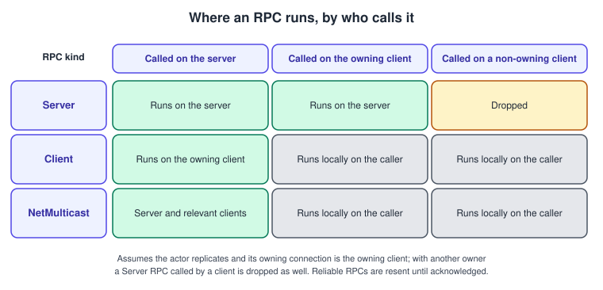
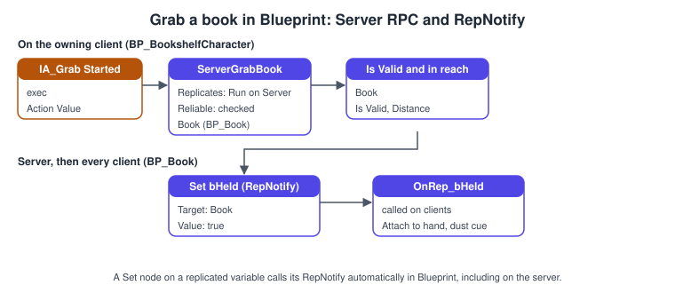
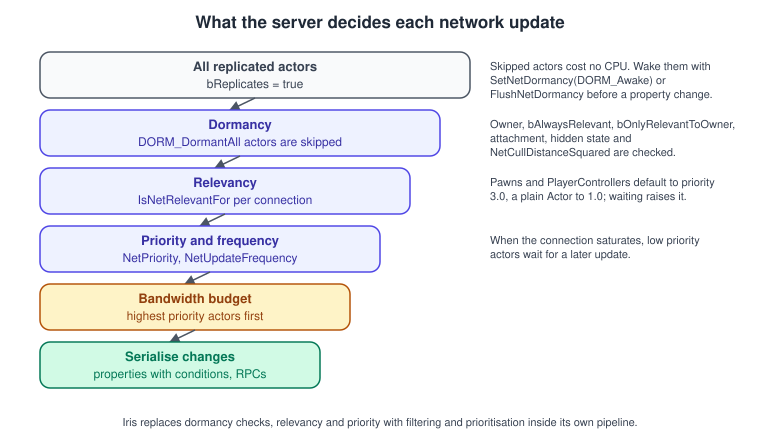
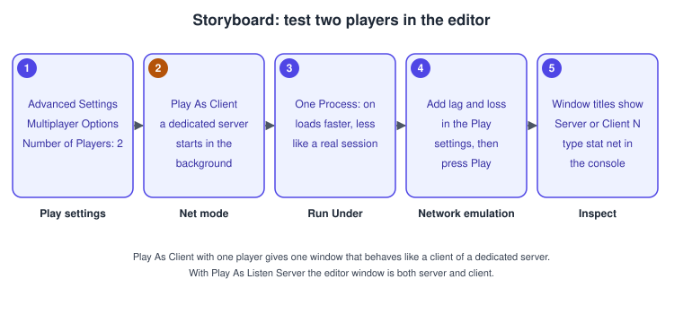

Networking and Replication
|
This content was generated with the assistance of AI and should be verified against the official documentation before being relied on in production. |
A multiplayer game is one game that runs on several machines and has to look like the same game on all of them. Unreal Engine’s answer is a client-server architecture with server authority: one machine runs the real game, decides what happened and tells the others; the other machines simulate a close approximation locally and ask the server to do things on their behalf. Everything on this page (replicated properties, RepNotify functions, remote procedure calls, relevancy, dormancy, prediction) is a tool for keeping that approximation honest without sending the whole world every frame.
The facts on this page were checked in November 2026 against the Unreal Engine 5.8 documentation (5.8 was released on 2026-06-17, and the latest hotfix found is 5.8.4). The networking model is the same on every platform the engine targets. Building a dedicated server target needs an engine built from source and a Windows or Linux toolchain, which is covered in Installing and Building from Source. The running example is the two-player co-op step of the Bookshelf: two librarians in L_Library grab books from the shelf and return them, the book state is replicated, and the score is a replicated value on ABookshelfGameState. The page builds on the classes of the Gameplay Framework and on the property and function specifiers of UObject, Reflection and Garbage Collection. The engine-independent theory of lag, snapshots and prediction is in Multiplayer Game Architecture; this page is the Unreal-specific half.
The model: one authority, many approximations

The server holds the authoritative game state. A client controls a Pawn that it owns on the server, sends RPCs to the server and receives replicated state, which it uses to approximate what the server is doing. By default the server does not stream pictures: each client re-creates the visuals locally from replicated data. Two kinds of server exist:
-
A listen server is a server that also has a local player. It is easy to start spontaneously, the host has a latency advantage, and the host carries extra rendering and audio load. It suits casual co-op and small-group games.
-
A dedicated server runs on its own machine with no local player, no rendering and no player-only logic, so it is more efficient, costlier to run and harder to configure. It suits games that need fairness, scale or trust.
The same executable plays several roles, reported by GetNetMode() as an ENetMode: NM_Standalone (no networking), NM_DedicatedServer, NM_ListenServer and NM_Client. Code that must run only on the server tests HasAuthority() or the net mode; code that must not run on a dedicated server (cosmetics, UI, audio) tests that it is not NM_DedicatedServer. The build also defines UE_SERVER and WITH_SERVER_CODE: a game target has UE_SERVER 0 and WITH_SERVER_CODE 1, a server target has both at 1, and a client target has both at 0, which is how server-only code is removed from client builds.
Not everything replicates by default. Actor creation and destruction do (the server spawns remote copies on clients and removes them on destruction), and so do properties and RPCs you mark. Components and subobjects replicate only if you configure them. Skeletal and static mesh components, materials, animation blueprints, particle components, sound emitters and physics objects are not replicated by default.
Roles, ownership and what exists where
Local Role and Remote Role
Every replicated Actor has two role properties, Role (what this machine is to the actor) and RemoteRole (what the other side is). The values:
-
ROLE_Authority: this machine is in charge of the actor. For a replicated actor only the server has it. Test withRole == ROLE_AuthorityorHasAuthority(). -
ROLE_SimulatedProxy: a copy that simulates the true state between updates, usually by extrapolating from the last known velocity, and has no authority to change state. -
ROLE_AutonomousProxy: used for actors possessed by a PlayerController. The actor receives real input from a human, so the client can act locally; the server still corrects it. -
ROLE_None: the actor is not replicated on this side.
The values flip with the viewpoint: a Pawn that is Authority with remote role AutonomousProxy on the server is AutonomousProxy with remote role Authority on the owning client, and SimulatedProxy on every other client. The Epic pages describe the autonomous proxy slightly differently (a proxy that performs some functions locally but receives corrections from the authoritative actor, versus one that has authority to call remote functions), so treat it as "the client’s own, locally driven copy".
Owners and owning connections
Every Actor stores a pointer to its owner, which may be null. The owning connection of an actor is the connection of its owning PlayerController; a Pawn has an owning connection only while that controller possesses it. Inventory items are owned by the connection that owns the pawn. For an Actor Component, walk the outer chain to the owning actor. Ownership decides three things: which connection may call a Server RPC on the actor, which connection executes a Client RPC, and who receives properties that use an owner condition. bOnlyRelevantToOwner actors, such as PlayerControllers by default, are replicated only to their owner. A book that the librarian is holding must therefore have its owner set to that librarian (or its controller) before anyone can call an RPC on it.
Which framework classes exist where
| Class | Exists on | Use for |
|---|---|---|
|
Server only |
Rules, spawning, match flow. Clients never see it, so never put anything a client needs here. |
|
Server and all clients |
State everyone shares: the Bookshelf score. |
|
Server and all clients |
Per-player public data: name, score, the ASC of the Gameplay Ability System. |
|
Server and its owning client |
Input, camera, HUD and the RPC channel to the server. Other clients never have your controller. |
|
Server and all clients |
The body. Replicated to all with the movement. |
|
Owning client only |
Presentation; never replicated. |
|
Each machine separately |
Per-process data, not replicated. |
Property replication
A property replicates when it is marked in its UPROPERTY and registered in GetLifetimeReplicatedProps. There are three marks: Replicated (send changes from the server to each client), ReplicatedUsing=OnRep_Name (the same, and call a RepNotify function on the client when it arrives) and NotReplicated (exclude a member of a replicated struct). The actor must replicate (bReplicates = true in the constructor, Replicates in Blueprint), and bReplicateMovement replicates location, rotation and velocity. A property can never be unregistered once registered. The Net/UnrealNetwork.h header provides the macros.
RepNotify
The RepNotify is declared UFUNCTION() and may take no parameter or one parameter of the property’s type, which receives the previous value (by value or as a const reference). It runs on the client after the new value has been applied, so it is where derived state is updated: a collision flag, a visual, a delegate for the HUD. In Blueprint a Set node on a replicated variable calls its RepNotify automatically, on the server too; Blueprint functions and macros that take the variable by reference generally do not. In C++ you assign the variable on the server and call the notify function yourself if the server needs the same reaction, as ABookActor::SetHeldBy does below.
Conditions
Without a condition a property replicates whenever it changes. DOREPLIFETIME_CONDITION(Class, Property, Condition) narrows it with an ELifetimeCondition, and DOREPLIFETIME_CONDITION_NOTIFY adds REPNOTIFY_Always (call the RepNotify on every arrival) or REPNOTIFY_OnChanged (only when the value changed). DOREPLIFETIME_WITH_PARAMS with an FDoRepLifetimeParams gives full control at a higher cost.
| Condition | Replicates |
|---|---|
|
Whenever it changes. |
|
Only in the initial bunch, when the actor is first sent. Good for constants set at spawn, such as the book’s cover colour. |
|
Only to the owner. Private data such as a hand of cards. |
|
To everyone except the owner, usually because the owner predicts it. |
|
To simulated or autonomous copies only. |
|
To simulated actors or actors with |
|
In the initial bunch or to the owner. |
|
Toggled per actor by |
|
A runtime override; replicates by default until changed. |
|
Never. |
|
Include or exclude the replay (demo) connection. |
References to other objects
A UObject* property marked Replicated is sent as a network GUID. The target must be supported for networking: a replicated actor or component, a stably named object (loaded from a package and so present with the same name on both sides, such as an actor placed in L_Library or a component added by a simple construction script), or a UObject from a loaded package. A pointer to an actor that was spawned only on the server and does not replicate arrives as null. A reference to a dynamic actor can also arrive before the actor does, so treat it as possibly null in the RepNotify.
ABookActor: replicated book state
// BookActor.h (the parts that matter for networking)
#pragma once
#include "CoreMinimal.h"
#include "GameFramework/Actor.h"
#include "BookActor.generated.h"
class ACharacter;
class UStaticMeshComponent;
UCLASS()
class BOOKSHELF_API ABookActor : public AActor
{
GENERATED_BODY()
public:
ABookActor();
virtual void GetLifetimeReplicatedProps(TArray<FLifetimeProperty>& OutLifetimeProps) const override;
/** Server only: who holds the book now, or nullptr to shelve it. */
void SetHeldBy(ACharacter* NewHolder);
ACharacter* GetHolder() const { return Holder; }
/** Cosmetic: plays the landing sound and dust on every machine that sees the book. */
UFUNCTION(NetMulticast, Unreliable)
void MulticastPlayThud(float Intensity);
protected:
UPROPERTY(ReplicatedUsing = OnRep_Holder)
TObjectPtr<ACharacter> Holder;
/** Set at spawn and never again, so it is sent once. */
UPROPERTY(Replicated, EditAnywhere, Category = "Book")
FLinearColor CoverColor = FLinearColor::White;
UPROPERTY(VisibleAnywhere, Category = "Book")
TObjectPtr<UStaticMeshComponent> Mesh;
UFUNCTION()
void OnRep_Holder(ACharacter* PreviousHolder);
private:
void GoDormant();
FTimerHandle DormancyTimer;
};// BookActor.cpp (the parts that matter for networking)
#include "BookActor.h"
#include "Bookshelf.h"
#include "Components/StaticMeshComponent.h"
#include "GameFramework/Character.h"
#include "Net/UnrealNetwork.h"
#include "TimerManager.h"
ABookActor::ABookActor()
{
Mesh = CreateDefaultSubobject<UStaticMeshComponent>(TEXT("Mesh"));
SetRootComponent(Mesh);
Mesh->SetSimulatePhysics(true);
bReplicates = true;
SetReplicatingMovement(true);
}
void ABookActor::GetLifetimeReplicatedProps(TArray<FLifetimeProperty>& OutLifetimeProps) const
{
Super::GetLifetimeReplicatedProps(OutLifetimeProps);
DOREPLIFETIME(ABookActor, Holder);
DOREPLIFETIME_CONDITION(ABookActor, CoverColor, COND_InitialOnly);
}
void ABookActor::SetHeldBy(ACharacter* NewHolder)
{
if (!HasAuthority())
{
return;
}
// Changes made while an actor is dormant can be lost, so wake it first.
SetNetDormancy(DORM_Awake);
GetWorldTimerManager().ClearTimer(DormancyTimer);
ACharacter* Previous = Holder;
Holder = NewHolder;
SetOwner(NewHolder); // the holder's connection may now call RPCs on the book
// The server does not get a RepNotify call from its own assignment in C++.
OnRep_Holder(Previous);
if (!NewHolder)
{
// Give the last updates time to go out, then stop considering the book for replication.
GetWorldTimerManager().SetTimer(DormancyTimer, this, &ABookActor::GoDormant, 3.0f);
}
}
void ABookActor::GoDormant()
{
SetNetDormancy(DORM_DormantAll);
}
void ABookActor::OnRep_Holder(ACharacter* PreviousHolder)
{
// Derived state: a held book is carried, a shelved book is a physics body again.
// Attachment and transform replicate through the actor's movement; collision and simulation do not.
const bool bHeld = (Holder != nullptr);
Mesh->SetSimulatePhysics(!bHeld);
SetActorEnableCollision(!bHeld);
UE_LOG(LogBookshelf, Verbose, TEXT("%s is now %s"), *GetName(), bHeld ? TEXT("held") : TEXT("shelved"));
}
void ABookActor::MulticastPlayThud_Implementation(float Intensity)
{
// Runs on the server and on every client for which the book is relevant.
if (GetNetMode() != NM_DedicatedServer)
{
// Play the sound and spawn the dust here; see the audio and Niagara pages.
}
}ABookshelfGameState: the shared score
// BookshelfGameState.h
#pragma once
#include "CoreMinimal.h"
#include "GameFramework/GameStateBase.h"
#include "BookshelfGameState.generated.h"
DECLARE_MULTICAST_DELEGATE_OneParam(FOnScoreChanged, int32 /*NewScore*/);
UCLASS()
class BOOKSHELF_API ABookshelfGameState : public AGameStateBase
{
GENERATED_BODY()
public:
virtual void GetLifetimeReplicatedProps(TArray<FLifetimeProperty>& OutLifetimeProps) const override;
int32 GetScore() const { return Score; }
/** Server only. */
void AddScore(int32 Delta);
/** The HUD binds here; it fires on the server and on clients when the value changes. */
FOnScoreChanged OnScoreChanged;
protected:
UPROPERTY(ReplicatedUsing = OnRep_Score)
int32 Score = 0;
UFUNCTION()
void OnRep_Score();
};// BookshelfGameState.cpp
#include "BookshelfGameState.h"
#include "Net/UnrealNetwork.h"
void ABookshelfGameState::GetLifetimeReplicatedProps(TArray<FLifetimeProperty>& OutLifetimeProps) const
{
Super::GetLifetimeReplicatedProps(OutLifetimeProps);
DOREPLIFETIME(ABookshelfGameState, Score);
}
void ABookshelfGameState::AddScore(int32 Delta)
{
if (HasAuthority())
{
Score += Delta;
OnRep_Score(); // the server updates its own HUD too
}
}
void ABookshelfGameState::OnRep_Score()
{
OnScoreChanged.Broadcast(Score);
}Components and subobjects
A component replicates when the component itself is set to replicate (SetIsReplicatedByDefault(true) in its constructor, or SetIsReplicated(true)) and its owning actor replicates. A plain UObject replicates only as a subobject of an actor or component. The recommended way, and the only way Iris supports, is the registered subobject list: set bReplicateUsingRegisteredSubObjectList = true in the constructor of the actor or component, call AddReplicatedSubObject(Subobject) after creating the object and RemoveReplicatedSubObject(Subobject) before dropping it (the list holds a raw pointer that dangles after garbage collection otherwise). The UObject overrides IsSupportedForNetworking() to return true and registers its properties like an actor does; an object that is neither actor nor component also overrides RegisterReplicationFragments for Iris. The older ReplicateSubobjects override still works with the generic system but not with Iris; net.SubObjects.DefaultUseSubObjectReplicationList makes the registered list the default.
Remote procedure calls
A property says "keep this state in sync". An RPC says "do this now, on the other side". RPCs are one-way, cannot return a value, and are declared in the header with a UFUNCTION specifier and implemented in the source file as a function with the suffix _Implementation. By convention their names start with their kind (ServerGrabBook, ClientShowToast, MulticastPlayThud). The calling actor or component must replicate and, for anything but multicast from the server, must have a valid owner and owning connection.
| Specifier | Runs on | Caller |
|---|---|---|
|
The server |
The owning client (or the server itself). |
|
The owning client of the actor |
The server. |
|
The server and every client for which the actor is relevant |
The server; called from a client it runs only locally. |
|
The other side, never locally |
Either side, for an actor owned by a client. Not exposed to Blueprints. |

A Server RPC called from a client that does not own the actor is dropped, which is the usual cause of "my RPC does nothing": the actor has no owner or the wrong one.
Reliability, validation and send policy
RPCs are unreliable by default: an unreliable RPC is lost if its packet is lost and has no ordering guarantee. A Reliable RPC is resent until acknowledged, later RPCs wait behind it, and execution order is guaranteed, at the price of bandwidth and the risk of overflowing the reliable buffer if abused. Use reliable for rare state-changing requests (grab, return, buy) and unreliable for anything sent often or safe to lose (aim updates, cosmetic multicasts).
WithValidation on a Server RPC adds a function with the name of the RPC plus _Validate, with the same parameters, returning bool. The server calls it first; if it returns false the RPC is not executed and the calling client is disconnected, so validation is for anti-cheat (values that no honest client can send), never for ordinary conditions such as "the book is already taken". ERemoteFunctionSendPolicy offers Default (sent in the next net update at the end of the frame), ForceSend (sent at the start of the frame; supported only with the Replication Graph and Iris) and ForceQueue (serialised at the end of the net update if bandwidth remains).
ABookshelfCharacter and the PlayerController
// BookshelfCharacter.h (the parts that matter for RPCs)
UCLASS()
class BOOKSHELF_API ABookshelfCharacter : public ACharacter
{
GENERATED_BODY()
public:
/** Called on the owning client when the player presses IA_Grab and has a book in view. */
void RequestGrab(ABookActor* Book);
protected:
/** The client asks; the server decides. */
UFUNCTION(Server, Reliable)
void ServerGrabBook(ABookActor* Book);
/** Returns the held book to a shelf slot. The slot index is validated: an honest client never sends a bad one. */
UFUNCTION(Server, Reliable, WithValidation)
void ServerReturnBook(AShelfActor* Shelf, int32 SlotIndex);
UPROPERTY(EditDefaultsOnly, Category = "Book", meta = (ClampMin = "50.0"))
float MaxGrabDistance = 250.0f;
UPROPERTY(EditDefaultsOnly, Category = "Book")
int32 MaxShelfSlots = 32;
};// BookshelfCharacter.cpp (the parts that matter for RPCs)
#include "BookshelfCharacter.h"
#include "BookActor.h"
#include "Bookshelf.h"
#include "BookshelfGameState.h"
#include "ShelfActor.h"
#include "Engine/World.h"
void ABookshelfCharacter::RequestGrab(ABookActor* Book)
{
if (!IsLocallyControlled() || !Book)
{
return;
}
// Anything the player can see right away (a hand animation) may be played here; the book itself waits for the server.
ServerGrabBook(Book);
}
void ABookshelfCharacter::ServerGrabBook_Implementation(ABookActor* Book)
{
// Runs on the server. A client can send anything, so check everything.
if (!IsValid(Book) || Book->GetHolder() != nullptr)
{
return;
}
if (FVector::DistSquared(GetActorLocation(), Book->GetActorLocation()) > FMath::Square(MaxGrabDistance))
{
UE_LOG(LogBookshelf, Warning, TEXT("%s tried to grab %s from too far away."), *GetName(), *Book->GetName());
return;
}
Book->SetHeldBy(this);
if (ABookshelfGameState* GameState = GetWorld()->GetGameState<ABookshelfGameState>())
{
GameState->AddScore(1);
}
}
bool ABookshelfCharacter::ServerReturnBook_Validate(AShelfActor* Shelf, int32 SlotIndex)
{
// Returning false disconnects the client, so reject only values an honest client cannot send.
return SlotIndex >= 0 && SlotIndex < MaxShelfSlots;
}
void ABookshelfCharacter::ServerReturnBook_Implementation(AShelfActor* Shelf, int32 SlotIndex)
{
// The shelf may legitimately be null if it was destroyed in flight, so this is an ordinary check.
if (!IsValid(Shelf))
{
return;
}
// Find the held book, attach it to the socket BookSlot_<SlotIndex> and clear its holder (see AShelfActor).
}// BookshelfPlayerController.h (the Client RPC)
UCLASS()
class BOOKSHELF_API ABookshelfPlayerController : public APlayerController
{
GENERATED_BODY()
public:
/** Server to owning client: a message for the HUD. Unreliable, because a lost toast does not matter. */
UFUNCTION(Client, Unreliable)
void ClientShowToast(const FText& Message);
};
// BookshelfPlayerController.cpp
void ABookshelfPlayerController::ClientShowToast_Implementation(const FText& Message)
{
// Runs only on the owning client; hand the text to the HUD widget.
}The Blueprint equivalent

In Blueprint an RPC is a Custom Event: select it, and in the Details panel under Graph > Replicates choose Run on Server, Run on owning Client or Multicast and tick Reliable if needed. The Blueprint must have Replicates enabled, and the same ownership rules apply. A variable’s Replication dropdown offers Replicated or RepNotify; choosing RepNotify creates the OnRep_ function and, as noted above, a Set node calls it on the server as well. Blueprint-only multiplayer works for small games; for anything with prediction, validation or many replicated actors, put the replicated state in a C++ base class and let Blueprint subclasses handle presentation.
Relevancy, priority and dormancy

A server cannot send everything to everyone, so for each connection and each update it narrows down what to send. The generic replication system asks three questions:
-
Dormancy: is this actor worth looking at? A dormant actor is skipped entirely in the server’s gathering step, which is "one of the most significant network optimisations" per Epic for actors that change infrequently.
-
Relevancy: does this actor matter to this connection? A relevant actor is replicated; a dynamically spawned actor that stops being relevant is destroyed on that client.
-
Priority: if bandwidth is limited, which actors go first?
Relevancy
IsNetRelevantFor(RealViewer, ViewTarget, SrcLocation) applies the tests, and APawn and APlayerController override it. In summary:
-
bAlwaysRelevantmakes an actor relevant and overridesbOnlyRelevantToOwner. An actor is also relevant if it is owned by the connection’s Pawn or controller, is that Pawn, or instigated something such as noise or damage. -
With
bNetUseOwnerRelevancy, the owner’s relevancy decides. -
With
bOnlyRelevantToOwnerand no relevant owner, the actor is not relevant. -
An actor attached to another actor’s skeleton uses that actor’s relevancy.
-
A hidden actor, or one without a root component or with collision disabled on its root, is not relevant (set
bAlwaysRelevantor overrideIsNetRelevantForfor hidden-but-important actors). -
Otherwise distance decides: the actor is relevant if it is within
NetCullDistanceSquared(a squared distance in centimetres) of the viewer.
For the Bookshelf, ABookshelfGameState and the shelf are always relevant, the books use the default culling distance, and the librarians' own HUD actors never replicate.
Priority and update frequency
NetPriority decides which actors win when the connection is saturated: Pawns and PlayerControllers default to 3.0 and a base Actor to 1.0, and an actor’s effective priority grows the longer it goes without a successful update. NetUpdateFrequency and MinNetUpdateFrequency (updates per second) bound how often an actor is considered; lower them for slow-moving things and raise them for the ones the player watches. The engine provides SetNetUpdateFrequency for changing it from code, which the Gameplay Ability System example uses for its PlayerState.
Dormancy
ENetDormancy values, set in the constructor or with SetNetDormancy:
| Value | Meaning |
|---|---|
|
The actor never goes dormant (not enforced, so it still can). |
|
Not dormant; considered for replication. |
|
Starts dormant on all connections. Only for actors placed in the map. |
|
Dormant on all connections. |
|
Dormant on some connections only; not recommended and planned for deprecation. |
Use SetNetDormancy rather than writing the property, because it also notifies the net driver. FlushNetDormancy forces at least one update to every relevant connection without changing the state (for DORM_Initial it changes the state to DORM_DormantAll); ForceNetUpdate flushes and also ensures the actor is considered at the next update, which suits a one-off change in a single frame. Wake the actor, or flush, before changing a replicated property: changes made while dormant can be lost, and calling flush afterwards only seems to work by accident. A woken actor can send several updates before sleeping again, dormant actors are not checked for relevancy (so they are not destroyed on clients that move away, unless the Replication Graph’s Net.RepGraph.DormantDynamicActorsDestruction is on), toggling dormancy too often costs more than it saves, and net.DormancyHysteresis delays the final transition to reduce churn. Blueprint actors flush dormancy automatically when a replicated property is set; Blueprint components do not.
Source: Actor Relevancy and Actor Network Dormancy
Movement and prediction
A player’s own movement cannot wait for a round trip, so the Character Movement Component predicts it. On the owning client (the autonomous proxy) ReplicateMoveToServer runs the move, stores it as an FSavedMove_Character in a queue and sends the newest move to the server in an unreliable ServerMove RPC. The server replays the move with the client’s timestamp, compares the result with the position the client reported (ServerCheckClientError, with the tolerance MAXPOSITIONERRORSQUARED and a rate limit ClientErrorUpdateRateLimit in the GameNetworkManager config section) and answers with either ClientAckGoodMove or a correction such as ClientAdjustPosition. On a correction the client moves to the server’s state and replays its still-unacknowledged saved moves on top of it. Other clients see the character as a simulated proxy: they apply the replicated movement (FRepMovement) and SmoothClientPosition hides the steps between updates.
Most projects never override this. Extend FSavedMove_Character and the network move data containers when a move must carry extra input (a sprint flag), add custom movement modes through MOVE_Custom, use root motion sources instead of setting the location by hand (the server treats a manual location change as an error and corrects it), and teleport from the server so clients snap instead of smoothing. The newer Mover plugin replaces this scheme with a shared timeline and rollback and resimulation; Epic’s pages compare the two. Gameplay abilities add their own prediction keys on top, described in the Gameplay Ability System page.
Replication systems: generic, Replication Graph and Iris
Unreal has three replication systems. The generic system described so far is the default. The Replication Graph is a node-based plugin designed for large actor counts. Iris is the newest, opt-in system, built on Epic’s experience with Fortnite Battle Royale for larger worlds, higher player counts and lower server cost. It keeps a quantised copy of all replicated state and expects game code to tell it when something changes (push model), instead of polling every replicated object in each pre-send update as the generic system does. If push model is not enabled for an object, Iris falls back to polling it at its NetUpdateFrequency. Existing properties, RPCs and dormancy keep working; relevancy becomes filtering, priority becomes prioritization, and the Replication Graph’s nodes are replaced by network object filters and prioritizers. Iris and the Replication Graph are separate, and a net driver uses one. Iris supports listen servers.
The status needs care. The 5.8 release notes call Iris "production-ready for licensees in UE 5.8" and list clearer protocol mismatch errors and re-enabled RPC denial-of-service detection, while the Iris documentation pages still carry an Experimental label and advise caution when shipping with it. Treat Iris as a deliberate, tested choice, not a default.
To opt in, enable the plugin, call the support function in the module rules, enable it in the target and set the console variables:
{
"Plugins": [
{ "Name": "Iris", "Enabled": true }
]
}// Bookshelf.Build.cs (inside the constructor)
SetupIrisSupport(Target);
// BookshelfServer.Target.cs, BookshelfClient.Target.cs and Bookshelf.Target.cs (inside the constructor)
bUseIris = true;; Config/DefaultEngine.ini
[SystemSettings]
; Required for Iris: the registered subobject list.
net.SubObjects.DefaultUseSubObjectReplicationList=1
; Required if net.Iris.PushModelMode is set to 1:
; net.IsPushModelEnabled=1
; Required on engine versions past 5.1:
net.Iris.UseIrisReplication=1On the command line -UseIrisReplication=1 enables it and -UseIrisReplication=0 disables it, and a net driver must have Iris enabled in its IrisNetDriverConfigs entry. Migrating a project means setting bReplicateUsingRegisteredSubObjectList = true in every replicating actor class, implementing RegisterReplicationFragments on non-actor, non-component subobjects, giving structs with custom NetSerialize an Iris serializer or listing them in SupportsStructNetSerializerList under [/Script/IrisCore.ReplicationStateDescriptorConfig], and replacing node-based Replication Graph logic with filters. The Epic pages disagree on whether bUseIris lives in the target or the module rules; the target form shown above is the one on the introduction page.
Dedicated servers
A dedicated server is a separate target. You need an engine built from source, and a <ProjectName>Server.Target.cs (and, if you want a client-only build, a <ProjectName>Client.Target.cs) in the Source folder. A Server target is valid only if that file exists.
// Source/BookshelfServer.Target.cs
using UnrealBuildTool;
using System.Collections.Generic;
public class BookshelfServerTarget : TargetRules
{
public BookshelfServerTarget(TargetInfo Target) : base(Target)
{
Type = TargetType.Server;
DefaultBuildSettings = BuildSettingsVersion.Latest;
IncludeOrderVersion = EngineIncludeOrderVersion.Latest;
ExtraModuleNames.Add("Bookshelf");
}
}Then regenerate the project files, open the solution, choose the Development Server configuration and build; the output is BookshelfServer.exe in Binaries/Win64. Cook the server content with Platforms > Windows > Build Target > Server and Content Management > Cook (the output goes to Saved/Cooked/WindowsServer); running the server before cooking fails with a missing shaders error. Start it from the project root with BookshelfServer.exe -log. It listens on port 7777 unless you pass -port=<number>, and a client connects with an address argument such as BookshelfClient.exe 127.0.0.1:7777. The map the server loads comes from the Server Default Map in Project Settings > Maps & Modes. The packaging of a server build follows the same cook and stage steps as in Packaging for Desktop.
Procedure: test two players in the editor

-
Open the Play dropdown in the toolbar, choose Advanced Settings and find the Multiplayer Options.
-
Set Number of Players to 2. The editor counts as a player in a listen-server session; a dedicated server does not count.
-
Choose the net mode: Play Standalone (no networking), Play As Listen Server (the editor is server and client) or Play As Client (a dedicated server starts in the background). For the Bookshelf choose Play As Client, which behaves like a client of a dedicated server even with one player.
-
Decide on Run Under One Process. On, the windows start in one engine instance, which loads much faster but is less like a real player’s environment; off, each instance is its own process.
-
Under Network Emulation tick Enable Network Emulation, choose the Emulation Target (server only, clients only or everyone) and a Network Emulation Profile (Average, Bad or Custom); each direction has a minimum and maximum latency and a packet loss percentage. Latency of 100 ms and a few percent of loss expose most prediction and RepNotify bugs.
-
Press Play. The windows are titled Server or Client N. Grab a book in one window and confirm that it moves, the score changes and the thud plays in the other. Type
stat netin a window’s console to see traffic.
Common mistakes
-
Doing gameplay on the client. Changing health, score or an actor’s position in client code is invisible to everyone else and is overwritten by the next replication. Clients request; the server decides.
-
An RPC that does nothing. The Server RPC was called on an actor the client does not own, so it was dropped. Set the owner (as
SetHeldBydoes) or route the call through the Pawn or PlayerController. -
Reliable RPCs in a tick. A reliable RPC every frame fills the reliable buffer and can disconnect the player. Send frequent data unreliably.
-
Validation as game logic. A failing
_Validatedisconnects the client. Use it only for impossible inputs. -
Forgetting
GetLifetimeReplicatedProps. The property is marked but never registered, so it silently does not replicate; also rememberSuper::GetLifetimeReplicatedProps. -
Expecting the RepNotify on the server. In C++ the server’s own assignment does not call it. Call it explicitly if the server needs the reaction.
-
Replicating cosmetics. Particle, sound and animation components are not replicated by default. Replicate the state (a bool, a tag) and let each machine play the effect, or use an unreliable multicast.
-
Trusting a pointer to a server-only actor. It arrives as null. Replicate the actor or reference stably named ones.
-
Changing a dormant actor. The change can be lost. Wake or flush first.
-
Putting client data in the GameMode. It does not exist on clients. Use the GameState or PlayerState.
-
Testing only on one machine with no latency. Everything works at 0 ms. Turn on network emulation from the start.
Performance notes
-
Bandwidth is the budget. Replicate the smallest state that lets clients reconstruct the rest: a held flag instead of a transform for an attached book, a seed instead of a list of random numbers. Use
COND_InitialOnlyfor constants andCOND_OwnerOnlyfor private data. -
Lower
NetUpdateFrequencyon actors that change slowly and useMinNetUpdateFrequencyso that a quiet actor is not polled at full rate. -
Use dormancy for actors that change rarely, such as shelved books, and wake them on change; avoid toggling it every frame.
-
Keep
NetCullDistanceSquaredsensible so far-away actors are not sent; remember it is a squared distance. -
Prefer unreliable RPCs for anything repeated; reliable RPCs queue and block each other.
-
Batch cosmetics. One multicast with a parameter beats several. Multicast RPCs also have a built-in throttle per actor network update period.
-
Consider Iris for high actor and player counts, after measuring; it needs the registered subobject list and push model for its full benefit.
-
Measure on a real server. The tools are in Profiling and Optimization.
What changed recently
| Version | Change |
|---|---|
Versions past 5.1 |
Iris is opt-in and the console variable |
UE 5.8 (2026-06-17) |
Iris is called production-ready for licensees in the release notes, with clearer protocol mismatch errors for out-of-sync clients and re-enabled RPC denial-of-service detection. Mover gains optional Iris replication support in Network Prediction, plus adaptive time dilation to reduce the client’s predict-ahead. |
Source: Unreal Engine 5.8 Release Notes
Where the books are outdated
-
Multiplayer chapters of the older books. Unreal Engine 4.X By Example by Benjamin Carnall (chapter 9) targets UE 4.10 and 4.11 and builds classes with
GENERATED_UCLASS_BODY()andFObjectInitializerconstructors; today useGENERATED_BODY(), default constructors andTObjectPtrmembers, as in the examples above. -
Unreal Engine 5 Game Development with C++ Scripting by Zhenyu George Li and E. Wyn Roberts (chapters 10 and 11) targets UE 5.0 only, so it predates Iris and its production-ready status in 5.8, Mover’s prediction and the registered subobject list as the default. Its generic-system explanations of roles, replication and RPCs remain valid.
-
Unreal Development Kit Game Programming with UnrealScript: Beginner’s Guide by Rachel Cordone (chapter 8) is about UnrealScript replication in the UDK of 2011, based on Unreal Engine 3. UnrealScript was dropped in UE4 in 2014; the concepts (authority, replicated variables, remote calls) carried over, but the syntax did not, and the book is useful only as history.
See also
-
Gameplay Framework: which classes exist on the server and which on clients.
-
Gameplay Ability System: predicted abilities and replication modes.
-
Actors and Components: the lifecycle that replication hooks into.
-
UObject, Reflection and Garbage Collection:
UPROPERTYandUFUNCTIONspecifiers. -
Packaging for Desktop: building and shipping server and client targets.
-
Profiling and Optimization: measuring network cost.
-
Multiplayer and Netcode (Unity): the same problems solved with Netcode for GameObjects and related packages.
-
Multiplayer Game Architecture: lag compensation, snapshots and prediction in general.
-
Game Loop and Frame Timing: fixed steps and why simulation and rendering run at different rates.